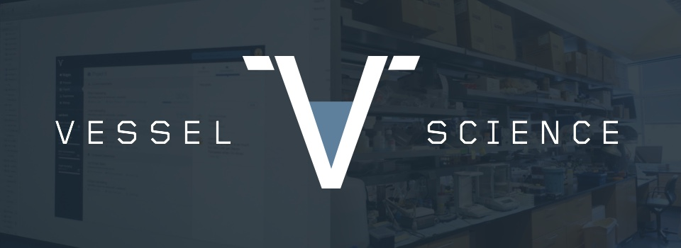
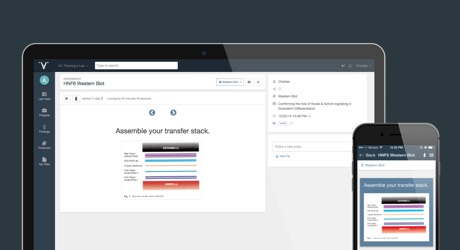

2014-2016
I co-founded Vessel Science, where I designed and built cloud and mobile based platforms for tracking lab research and drug manufacturing.
As the CTO, I led the design, development and branding of our two products:

Vessel Research
Released Productivity platform to make it easier for life science researchers to contextualize and share their experiments, protocols and data.